Debug de Agentes com watsonx Orchestrate
Percorra a linha do tempo de execução, leia as variáveis de cada nó e transforme uma resposta suspeita em um diagnóstico concreto.
Visão Geral
Quando um agente responde de um jeito inesperado, a pergunta que importa não é apenas o que ele respondeu, e sim por que ele chegou até ali. O modo de debug do watsonx Orchestrate responde exatamente isso: Registra cada passo da execução, mostra o caminho percorrido dentro do fluxo do agente e expõe os dados brutos que trafegaram entre o usuário, o modelo de linguagem e os colaboradores.
Neste laboratório você vai:
- Reproduzir uma interação no Draft Preview abrir a janela de Debug a partir da própria resposta;
- Percorrer a linha do tempo de execução passo a passo;
- Ler as variáveis de entrada e saída de cada nó;
- Interpretar o log detalhado em JSON e alternar entre as visualizações do fluxo para isolar o caminho que realmente foi executado.;
Ao final, você vai saber transformar uma resposta suspeita em um diagnóstico concreto, identificando se o problema está nas instruções do agente, no roteamento entre colaboradores ou na resposta do modelo.
Passo 1: Reproduza a conversa
Vamos continuar com o Agente de Busca, o mesmo agente do laboratório anterior. Com ele aberto na aba Build, olhe para o topo do painel Draft Preview: a faixa azul com a mensagem Running in debug mode avisa que o Orchestrate está gravando o rastreamento completo de tudo que acontece ali. É esse registro que alimenta a janela de depuração.
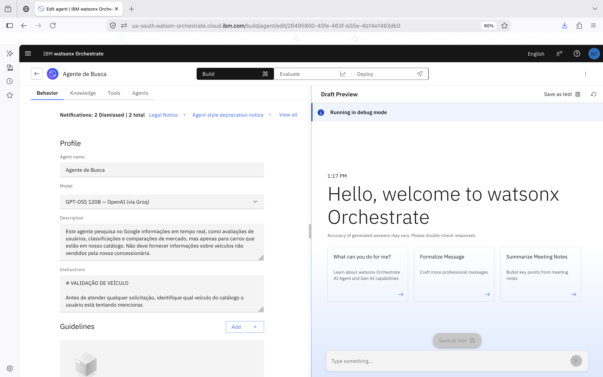
Envie a pergunta abaixo no Draft Preview.
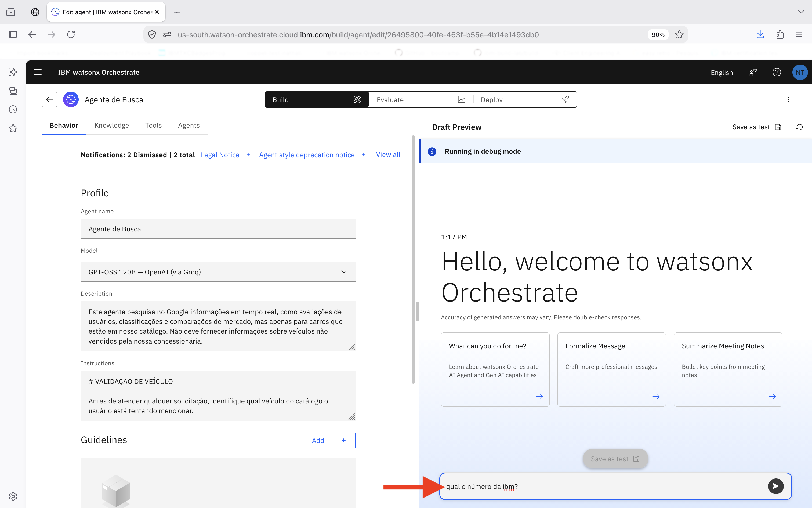
O agente responde que só pode falar sobre os veículos do catálogo, já que a pergunta não passa pela validação de veículo definida nas instruções.
Logo abaixo da resposta aparecem quatro ícones: positivo, negativo, copiar e uma joaninha. A joaninha abre a depuração daquela mensagem específica. Clique nela.
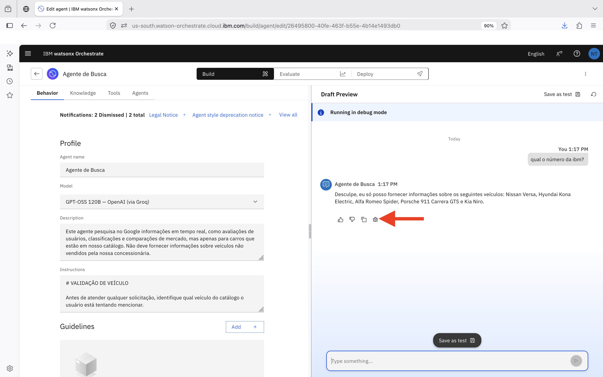
Passo 2: Entenda a janela de Debug
A tela Debug: Agente de Busca ocupa toda a área de trabalho e se divide em duas partes. À esquerda fica o Agent flow, o mapa de todos os nós que formam o agente. À direita fica o rastreamento da execução, organizado em Execution timeline, Variables e Node properties.
O aviso amarelo no topo merece atenção: a tela desenha a versão atual do agente, que pode não ser a mesma que rodou quando a conversa aconteceu. Se você editar o agente e depois voltar para depurar uma conversa antiga, o diagrama pode mostrar nós que ainda nem existiam na execução original.
Abra o seletor Legends, no rodapé do canvas, para aprender a ler o diagrama. Os tipos de nó descrevem o papel de cada caixa:
User inputé o ponto de entrada da conversa.Agentorquestra as tarefas.LLMrepresenta uma chamada ao modelo de linguagem.Toolé uma função externa.APIé um endpoint HTTP ou REST.Knowledge basefaz busca por recuperação.Workflowé um processo de várias etapas.Answeré o nó de resposta final.
Logo abaixo vêm os estados, que dizem se cada nó foi executado (Not yet executed, Used in the execution e Current active node), e os tipos de conexão, que diferenciam a ligação estrutural do agente (Agent flow) do caminho realmente percorrido nesta execução (Current taken path) e das ligações que ficaram de fora (Not used in this execution). Por último, as etiquetas: COLLAB marca um agente colaborador e o ícone de camadas indica que aquele nó tem nós filhos.
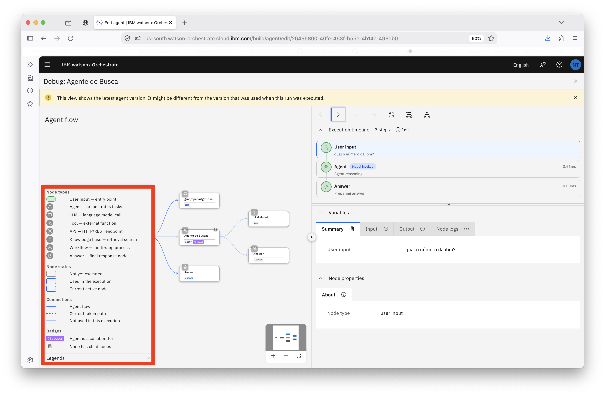
Feche a legenda e olhe para o painel da direita. O bloco Execution timeline resume a conversa inteira em três passos e 1ms de duração: User input, Agent com a etiqueta Model invoked e Answer. Repare que os 0.66ms do passo Agent concentram praticamente todo o tempo, o que já indica onde vale investigar primeiro. Clique no primeiro passo, User input.
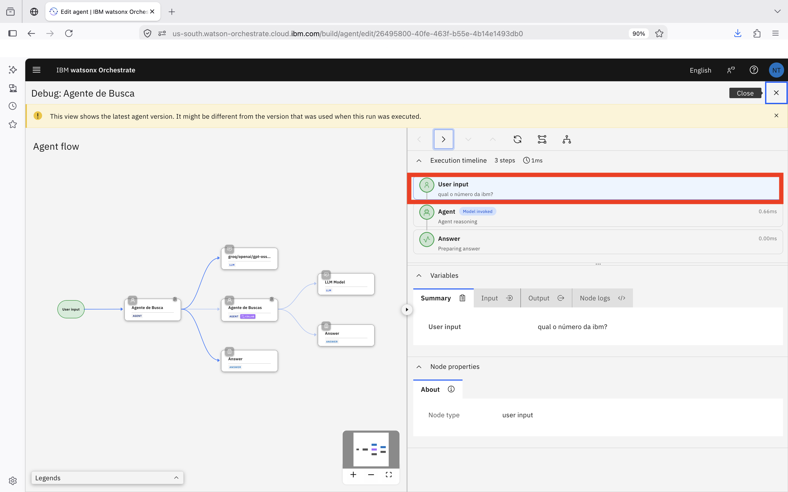
Passo 3: O passo User input
Com o passo selecionado, o nó correspondente acende no canvas e o bloco Variables passa a mostrar os dados daquele ponto do fluxo, distribuídos em quatro abas. A aba Summary já traz a leitura rápida, com a frase que o usuário enviou.
Abra a aba Input. Os campos Request e Message carregam a mesma pergunta, porque nesse ponto ainda não houve nenhum processamento: o que entrou foi exatamente o que o usuário digitou.
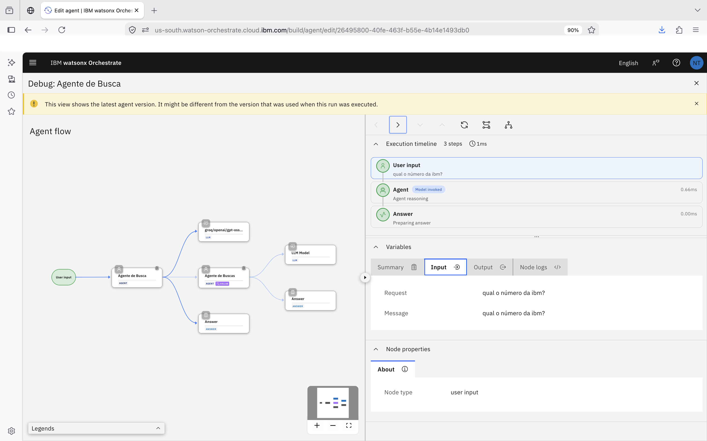
Em Output aparece a mensagem No output information available for this step. Isso é esperado. O nó de entrada apenas recebe a mensagem e a repassa adiante, sem produzir nada por conta própria.
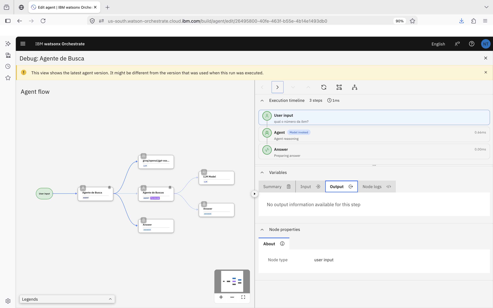
A aba Node logs mostra o span, que é o registro bruto do passo. O cabeçalho traz a identificação: stepIndex em zero marca o primeiro passo, spanId com o valor __user_input__ identifica o nó, parentAgentId guarda o identificador do Agente de Busca e depth em zero indica que tudo aconteceu no nível principal, sem aninhamento em nenhum colaborador. O botão Raw, no canto direito, alterna entre a versão formatada e o JSON puro.
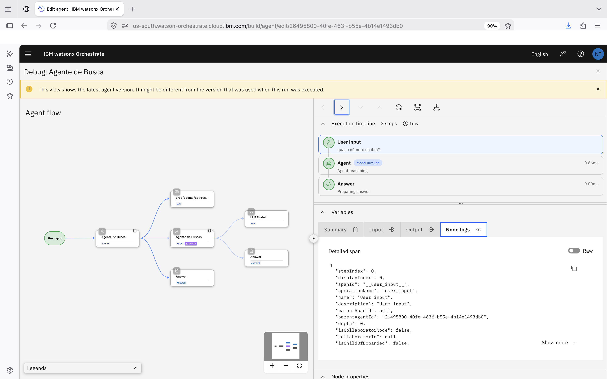
Clique em Show more para ver o span inteiro.
A parte de baixo cobre a execução: duration em zero confirma um passo instantâneo, hasModelCall como false mostra que nenhuma chamada ao modelo saiu daqui, input guarda a mensagem original, output está nulo e status marca success. Os campos childSpanIds vazio e hasChildren como false completam o quadro, este passo não gerou nenhum passo filho.
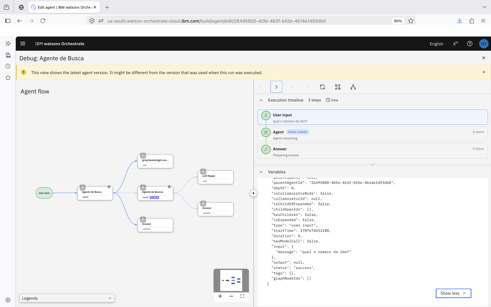
Passo 4: O passo Agent
Volte para a linha do tempo e clique no segundo passo. A etiqueta Model invoked avisa que foi aqui que o modelo de linguagem entrou em ação.
No canvas, o caminho percorrido aparece tracejado saindo de User input, passando pelo Agente de Busca e chegando ao nó do modelo groq/openai/gpt-oss. O Agente de Buscas, colaborador identificado pela etiqueta COLLAB, continua apagado, porque não foi acionado nesta conversa. Esse detalhe visual já responde à primeira pergunta de qualquer investigação de roteamento: o agente resolveu sozinho, sem repassar a solicitação.
O bloco Node properties também muda e ganha três abas, About, Guidelines e LLM Model. Em About estão o nome interno do agente, o nome de exibição, a descrição e as instruções vigentes.
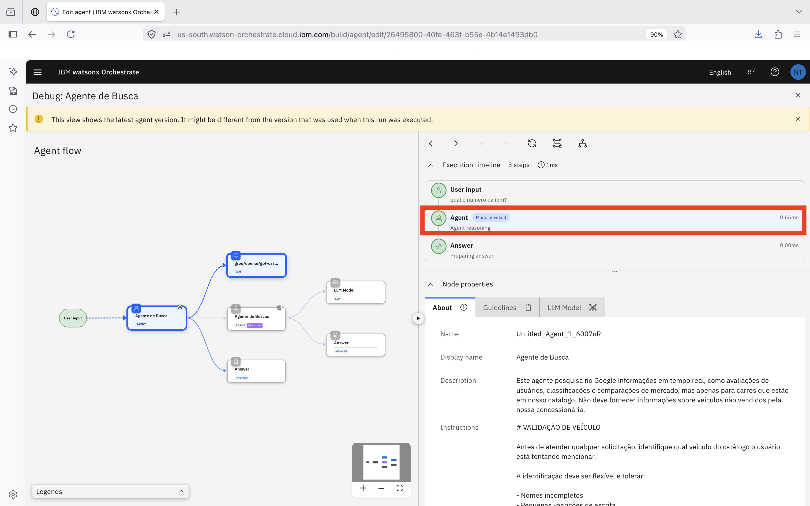
Role o painel para ler as instruções na íntegra. Essa é a leitura mais valiosa da depuração, porque coloca lado a lado o que você escreveu e o que o agente fez. O bloco de validação de veículo pede que o agente identifique o modelo mencionado antes de atender qualquer solicitação, tolerando nomes incompletos, variações de escrita, erros de digitação, apelidos e omissão da marca.
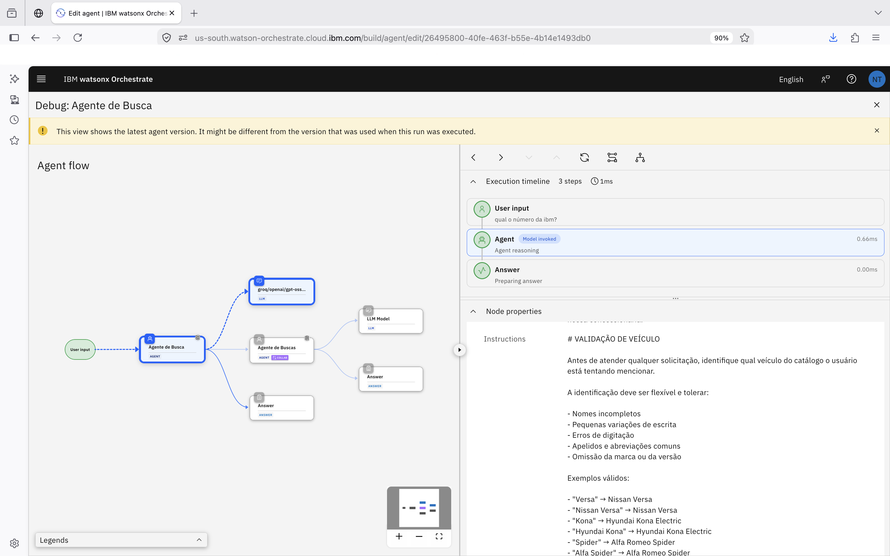
A lista de exemplos válidos mostra os apelidos aceitos para cada carro do catálogo, de "Versa" a "Carrera GTS". Nenhum deles se parece com a pergunta enviada, o que explica o desfecho.
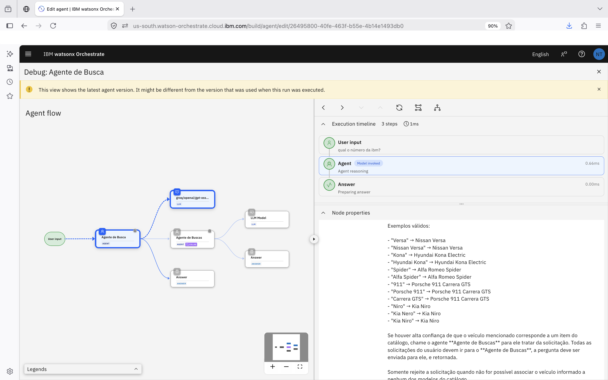
Em seguida vem a regra de roteamento. Havendo alta confiança de que o veículo pertence ao catálogo, a solicitação deve ser encaminhada ao Agente de Buscas. A recusa só é permitida quando não houver como associar o pedido a nenhum modelo, e a mensagem de rejeição está escrita literalmente nas instruções. É por isso que a resposta saiu palavra por palavra igual ao texto configurado.
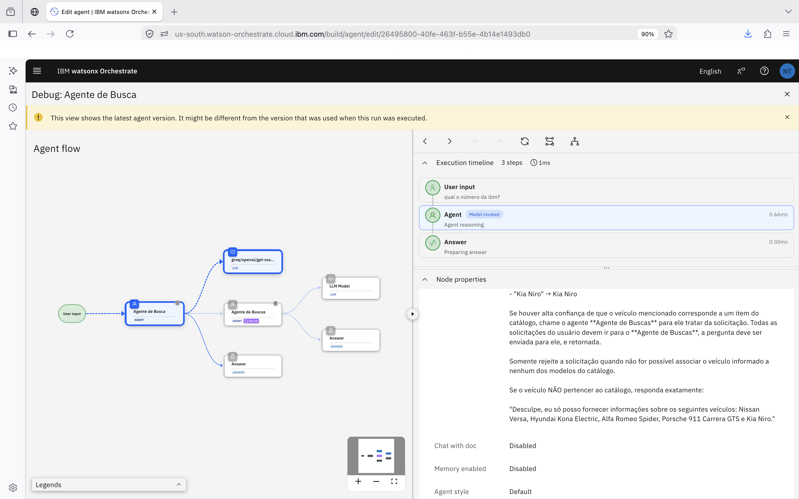
No fim do painel ficam as configurações do nó: Chat with doc e Memory enabled desabilitados, Agent style em Default e Node type como Agent. Quando um agente parece ignorar o contexto de mensagens anteriores, é aqui que se descobre que a memória simplesmente não estava ligada.
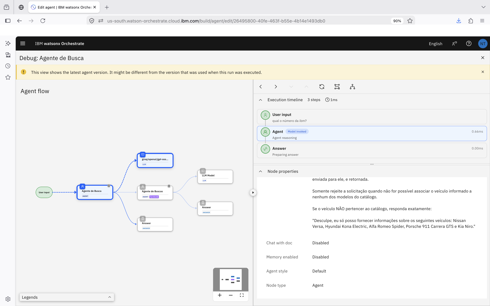
Passo 5: O passo Answer
Selecione o terceiro passo da linha do tempo. O nó Answer acende no fim do caminho tracejado e a aba Summary mostra Input request e Output response com exatamente o mesmo texto. Essa igualdade é o ponto central: o nó de resposta não reescreve nada, ele entrega o que o passo anterior produziu.
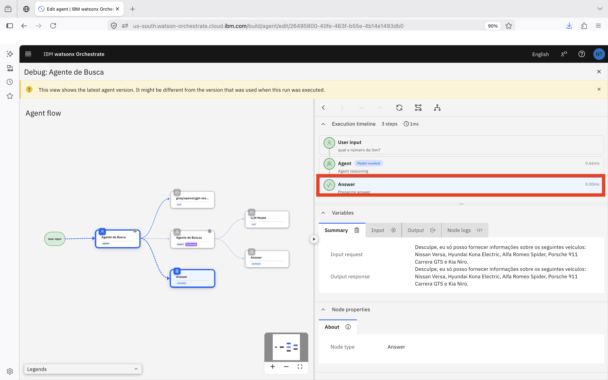
A aba Input acrescenta o contexto da chamada. Async flag como false e In async execution em zero indicam execução síncrona, Is Collaborator como false confirma que quem responde é o agente principal, Use supervisor interrupt handoff como false mostra que não houve transferência para um supervisor e Agent depth em um informa o nível do agente na hierarquia.
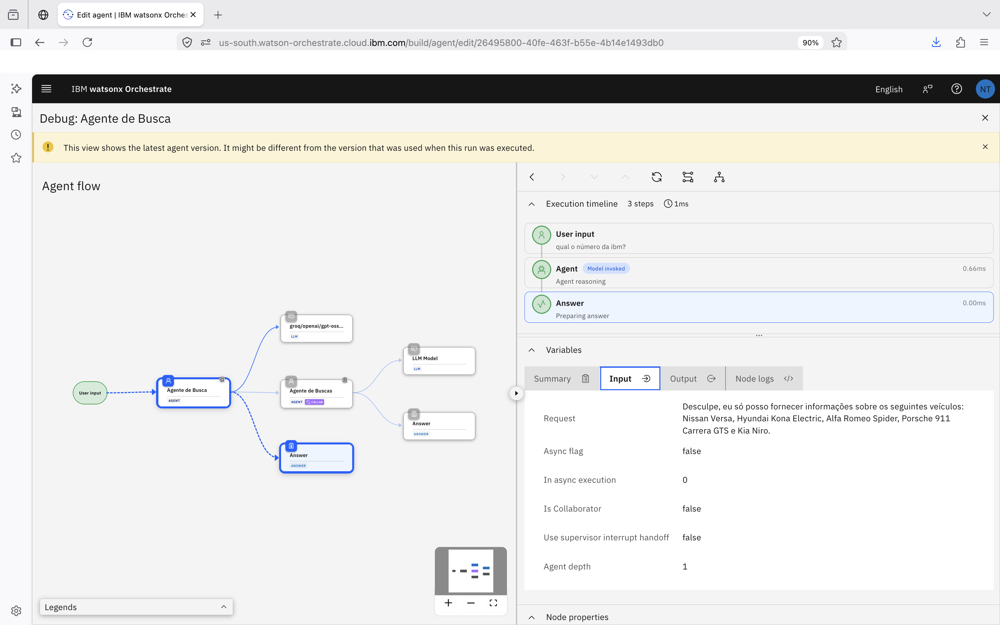
Em Output, o campo Response traz a resposta final, a mesma que o usuário viu no Draft Preview.
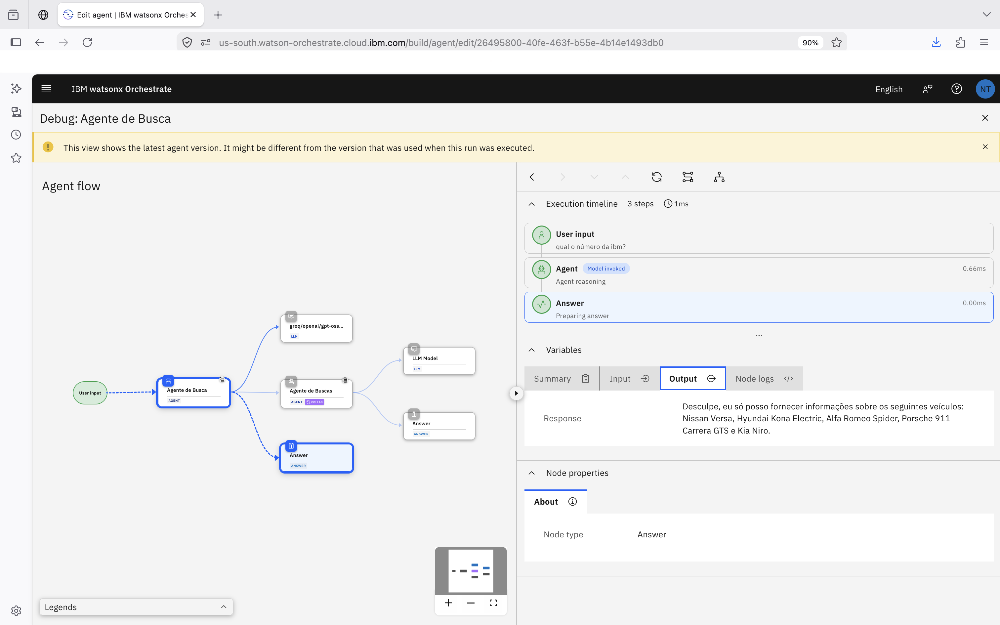
Abra Node logs. O cabeçalho do span identifica o passo com stepIndex em um, displayIndex em dois, um spanId próprio e operationName igual a answer.
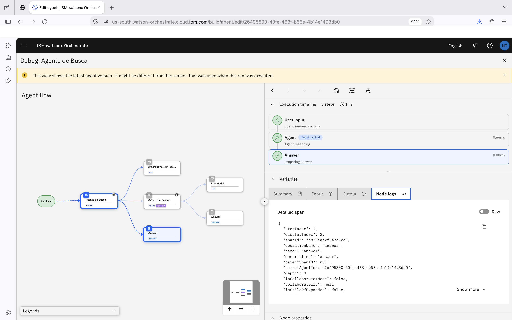
Clique em Show more.
A primeira parte do span cobre a execução e o contexto da conversa. Os valores duration em três, tokenUsage em zero e hasModelCall como false confirmam de novo que este nó não conversa com o modelo. Logo abaixo vem o bloco context, com os identificadores que amarram tudo: wxo_thread_id para a conversa, wxo_run_id para esta execução, além do usuário e do tenant. Vale guardar o wxo_thread_id, é ele que permite reencontrar a mesma conversa nas ferramentas de observabilidade.
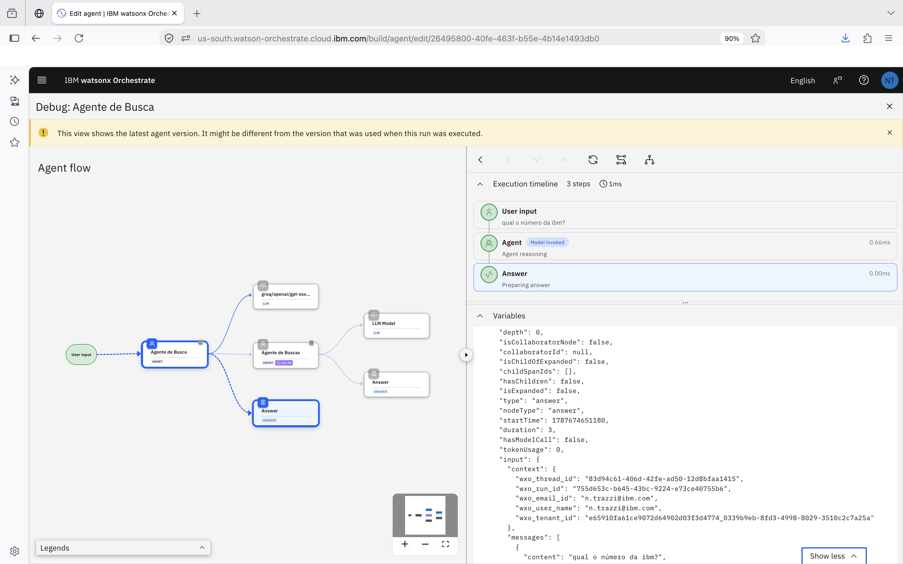
O bloco messages traz o diálogo como o modelo o enxergou. A primeira mensagem é a do usuário, marcada com type igual a human.
A segunda é a resposta, e dentro dela o campo reasoning guarda a justificativa do modelo em uma linha: o usuário perguntou algo sem relação com veículos, então a solicitação precisa ser recusada com a mensagem especificada. É a prova direta de que a instrução foi lida e seguida.
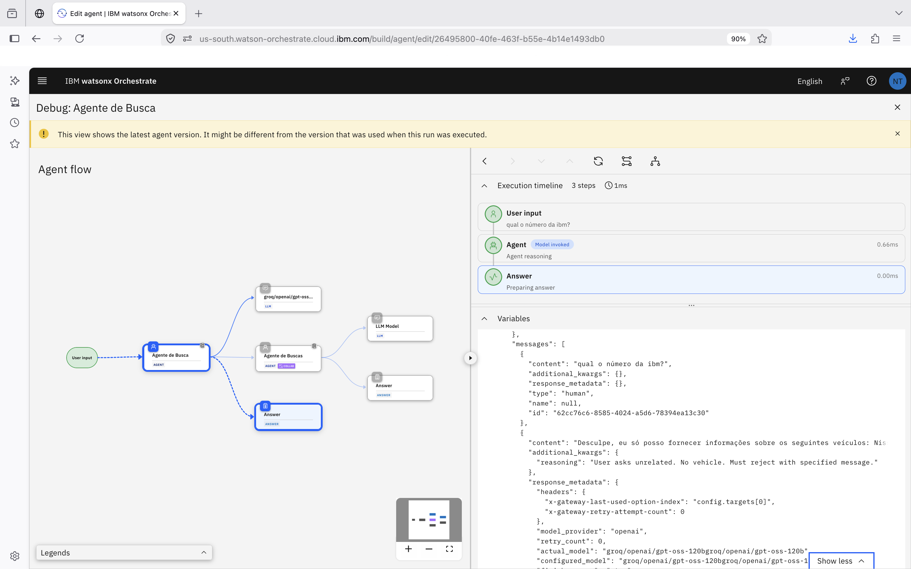
Em seguida aparecem os metadados do modelo. Os campos model_provider, actual_model e configured_model mostram qual modelo respondeu e confirmam que ele é o mesmo configurado no agente; uma divergência aí explicaria comportamentos estranhos. O finish_reason igual a stop indica encerramento normal, retry_count em zero mostra que não houve nova tentativa e tool_calls vazio confirma que nenhuma ferramenta foi chamada.
Por fim, usage_metadata contabiliza 1116 tokens de entrada, 118 de saída e 1234 no total, que é o número a observar quando o assunto é custo quando está se utilizando outros modelos.
o watsonx Orchestrate não faz cobrança por token e sim por MAUs. (Monthly active users)
Para entede mais sobre MAUs, consulte este link: https://www.ibm.com/docs/en/watsonx/watson-orchestrate/base?topic=entitlements-licenses-cloud
Ou o time comercial responsável pela sua conta.
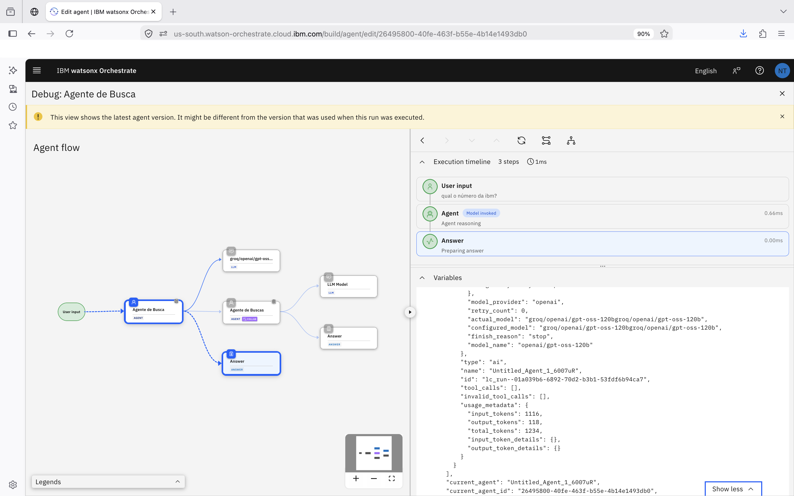
A sequência seguinte descreve o estado interno do agente no momento da resposta. reflection_enabled como true, com reflection_retry_count em zero e limite em um, significa que a revisão automática estava disponível mas não precisou ser usada. step_count em um conta os ciclos de raciocínio e is_collaborator como false reforça que nenhum colaborador entrou na conversa.
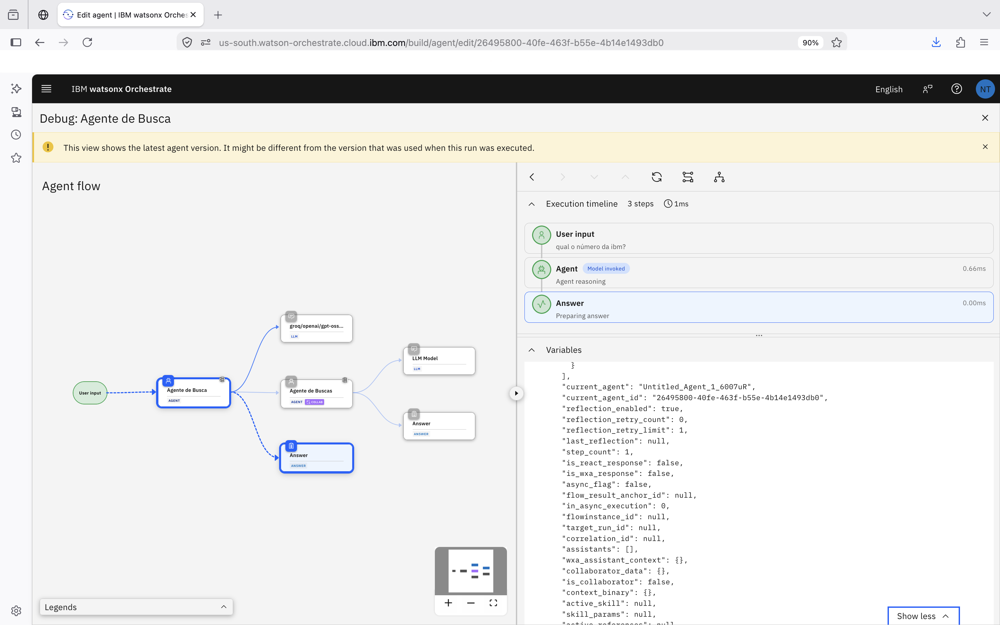
Mais abaixo ficam os campos de planejamento.
Com plan vazio, current_task sem tarefa ativa e is_planning como false, fica claro que o agente respondeu direto, sem quebrar a solicitação em etapas. O campo citations vazio mostra que nenhuma base de conhecimento foi consultada.
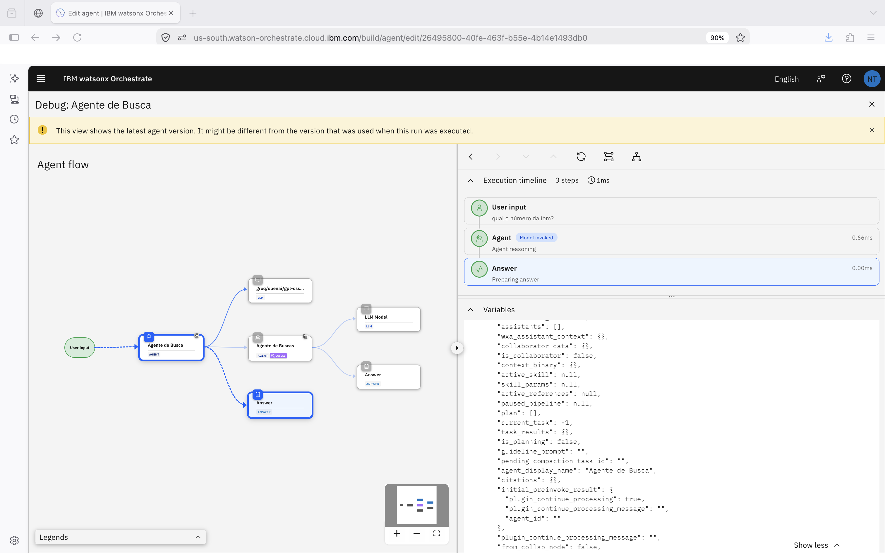
O trecho final reúne o resultado. O campo output repete a resposta entregue e status marca success.
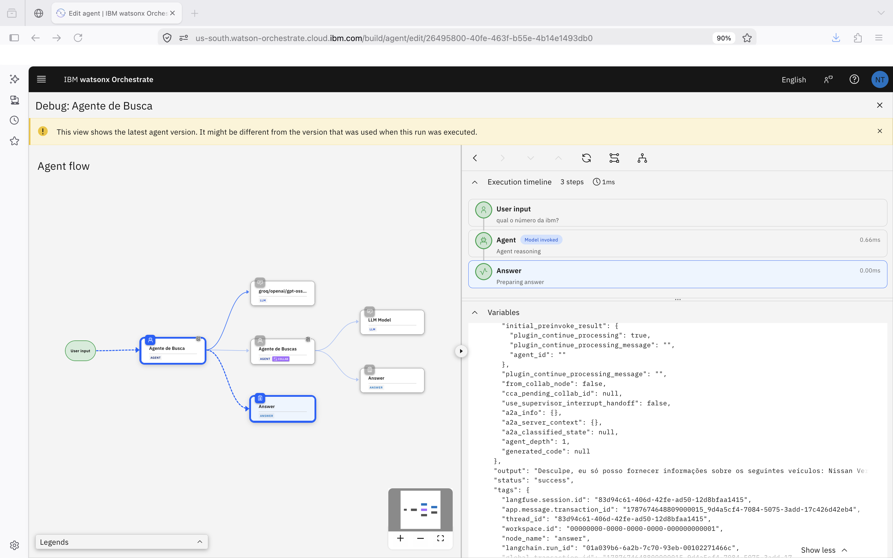
Depois vem o bloco tags, com os identificadores de rastreamento: a sessão, a transação, o thread_id, o workspace, o nome do nó e o fluxo interno que executou a resposta. São eles que conectam este passo aos painéis de monitoramento.
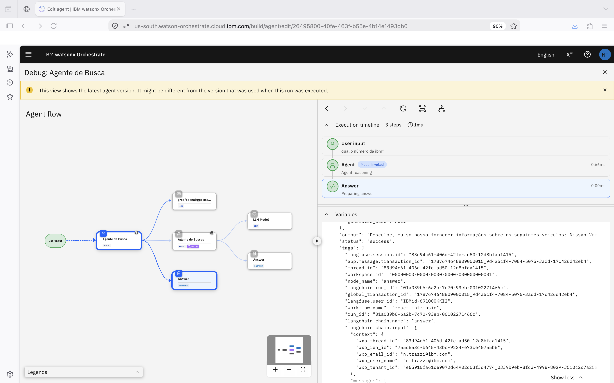
Os logs guardam as entradas e as saídas de nó em blocos separados, então a conversa, os metadados do modelo e o estado do agente aparecem uma segunda vez, agora dentro de langchain.chain.input. Use essa divisão a seu favor quando estiver procurando algo específico: o que está em langchain.chain.input descreve o que o nó recebeu, e o que está em langchain.chain.output descreve o que ele devolveu.
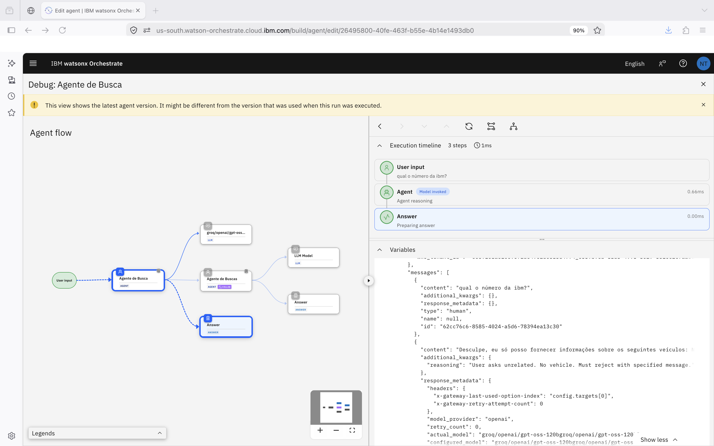
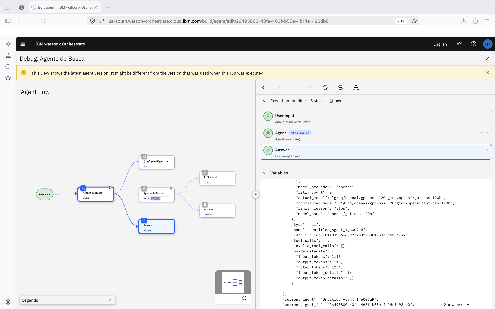
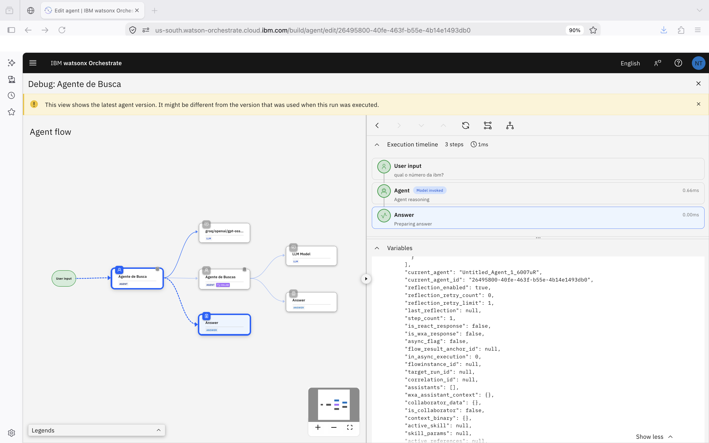
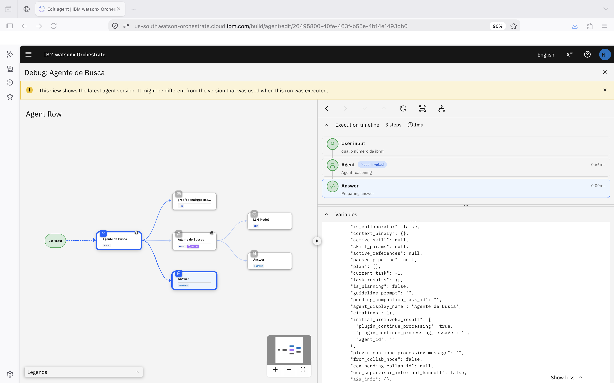
Passado o bloco, vem a identificação técnica do passo dentro do motor de execução.
O campo openinference.span.kind classifica o span como CHAIN, e os campos de langgraph marcam a posição exata do nó no grafo, incluindo a etapa, o nome do nó e o gatilho que levou até ele. Esses valores são úteis para reconstruir a ordem de execução em fluxos maiores.
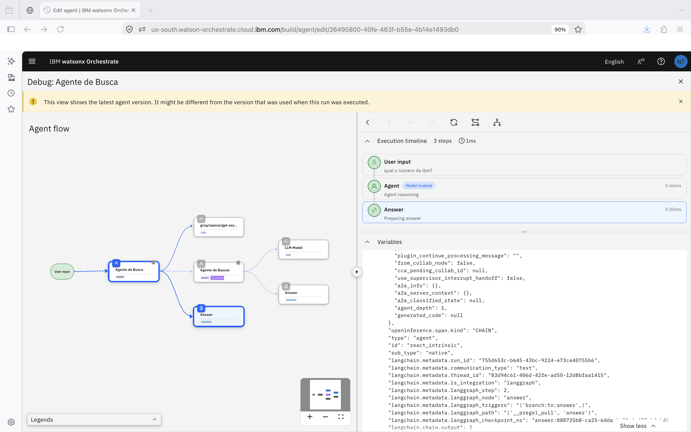
O bloco langchain.chain.output fecha o ciclo com a resposta final do assistente, novamente acompanhada do campo reasoning.
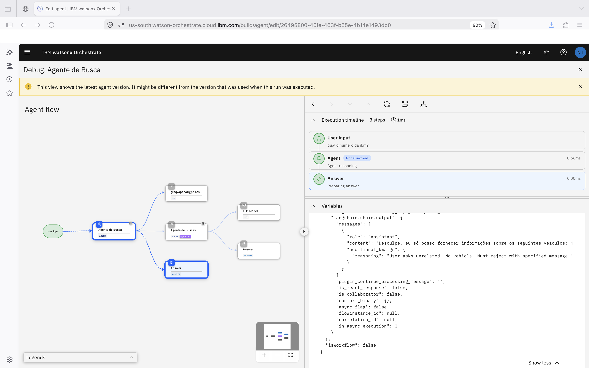
A última linha, isWorkflow como false, confirma que a execução seguiu o caminho de um agente comum e não de um workflow. Clique em Show less para recolher o span.
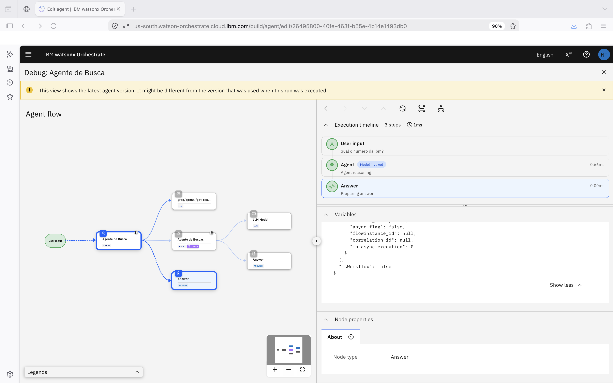
Passo 6: Leia o fluxo de outras maneiras
Os dois últimos ícones da barra superior controlam como o Agent flow é desenhado. O primeiro deles destaca o caminho percorrido dentro do diagrama completo: os nós usados ficam realçados e os demais continuam visíveis, porém apagados. É a visão indicada para comparar o que o agente poderia ter feito com o que ele de fato fez.
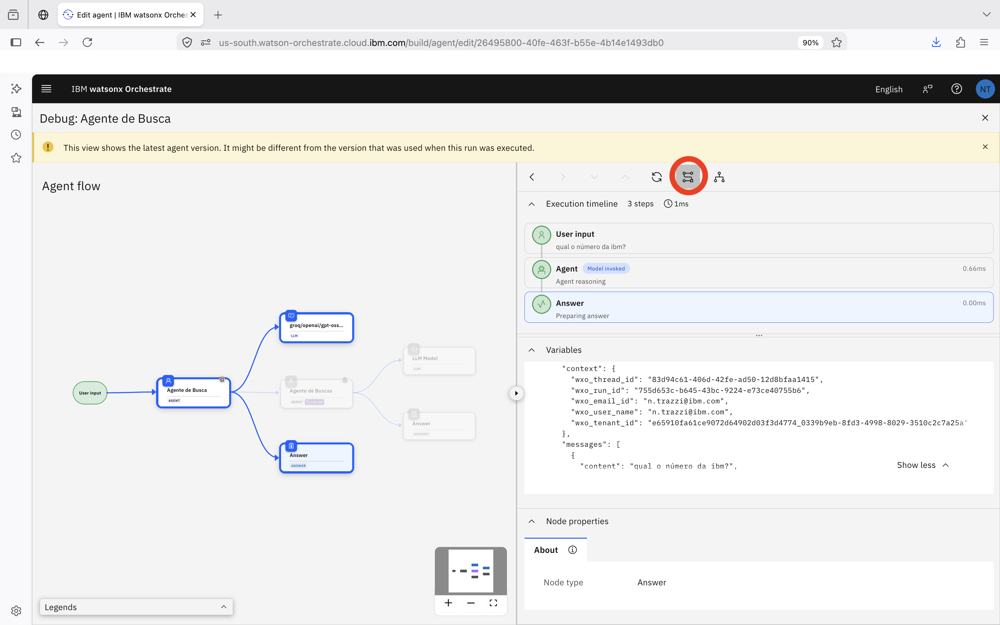
O segundo ícone vai além e remove do canvas tudo que não participou da execução. Sobram apenas User input, Agente de Busca, o nó do modelo e Answer, em tamanho maior. Em agentes com muitos colaboradores e ferramentas, essa visão elimina o ruído e deixa o caminho real evidente.
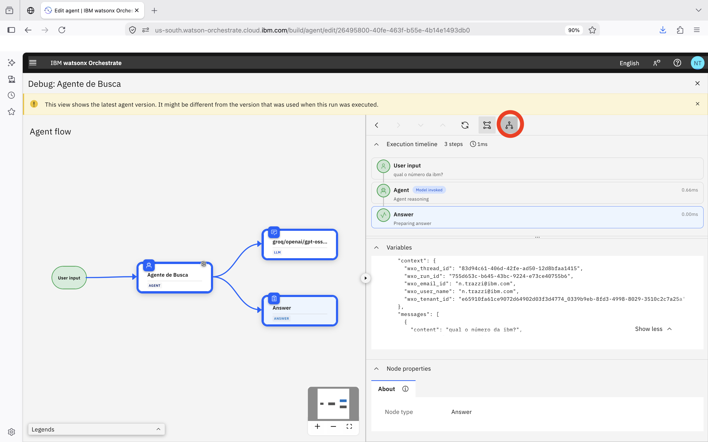
As setas à esquerda da barra percorrem os passos em ordem, sem precisar clicar na linha do tempo, o que ajuda a acompanhar a execução como uma sequência contínua. O ícone de recarregar atualiza o rastreamento e o X, no canto superior direito, fecha a depuração e devolve você à aba Build.
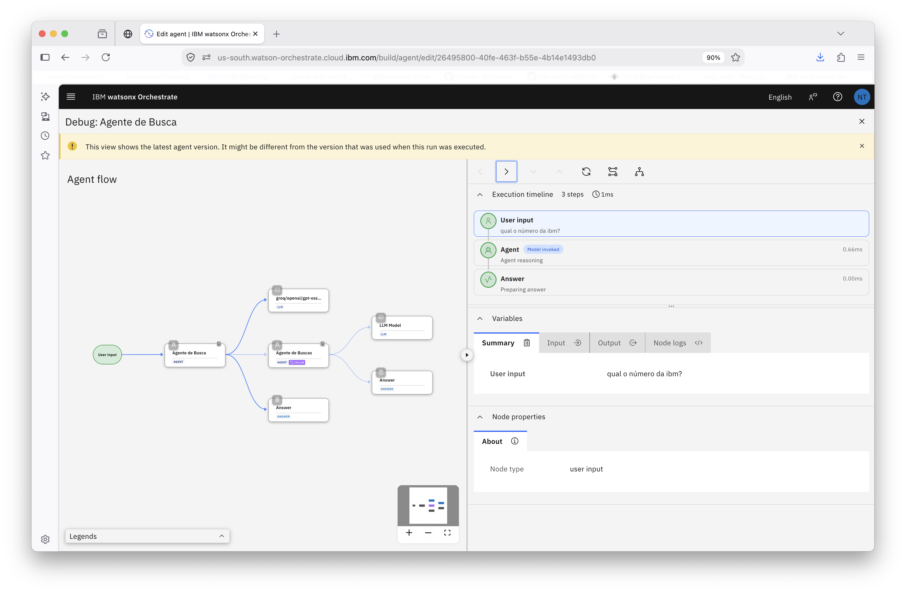
Resumo
Parabéns! 🎉 Você concluiu o laboratório de depuração de agentes no watsonx Orchestrate.
Ao longo das atividades, você reproduziu uma resposta no Draft Preview em modo de depuração, abriu o rastreamento pelo ícone de inseto, percorreu os três passos da execução, leu as variáveis de entrada e saída de cada nó, interpretou o span completo em JSON e alternou entre as visualizações do fluxo para isolar o caminho executado.
Mais importante que a mecânica é o método. Quando uma resposta sair errada, a investigação segue sempre a mesma ordem: confira no canvas se o roteamento foi o esperado, leia as instruções vigentes no passo Agent, procure o campo reasoning para entender a decisão do modelo e confirme nos metadados se o modelo e as configurações eram os que você imaginava. Na maioria dos casos o problema aparece em um desses quatro pontos.
Sou desenvolvedor e quero me aprofundar no watsonx Orchestrate
Todas as operações realizadas também estão disponíveis em uma experiência utilizando o ADK, o Agent Development Kit. Clique aqui para saber mais sobre como criar agentes, tools, bases de conhecimento e muito mais.
Próximos Passos
➜ Clique aqui para navegar para o próximo lab, Control Plane Lab do watsonx Orchestrate